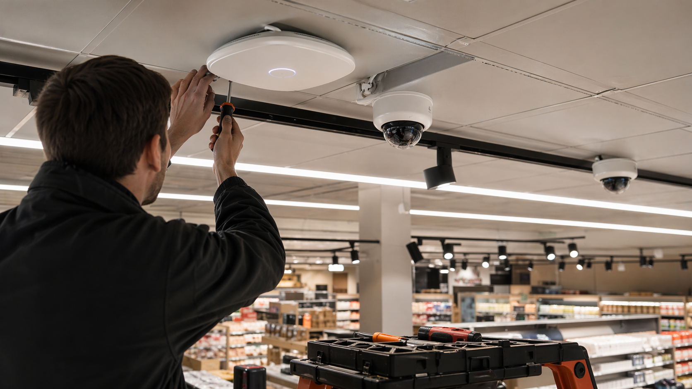
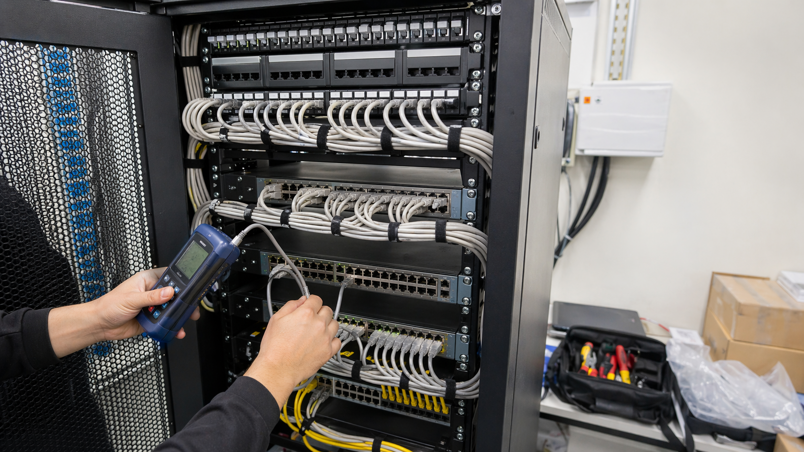

Layihə kartı
Araz Supermarket MMC filiallarında IT infrastrukturun qurulması
Filiallarda dayanıqlı şəbəkə, təhlükəsizlik və POS bağlantıları üçün planlama, quraşdırma, test və təhvil mərhələlərini göstərən layihə səhifəsi.
Görülən işlərin əhatəsi
Layihə filialların gündəlik satış prosesini dəstəkləyən şəbəkə infrastrukturunun qurulması üzərində fokuslanır: kabinet, kommutasiya, patch panel, kabel xəttləri, access point, CCTV və POS zonalarının bağlantısı.
İşlərdə obyekt auditi, kabel marşrutlarının planlanması, avadanlıq yerləşimi, konfiqurasiya, port testləri və təhvil sənədləşməsi vahid proses kimi təqdim olunur.
- Strukturlaşdırılmış kabel sistemi və rack səliqəsi
- Wi-Fi və CCTV nöqtələrinin yerləşdirilməsi
- POS və servis zonaları üçün stabil bağlantı
- Test, təhvil və sonrakı texniki dəstək
Foto kataloq
İş mərhələlərini göstərən qalereya
Bu hissə real layihə fotoları üçün kataloq kimi qurulub. Hazırda demo vizuallar yerləşdirilib və fayl adları sabit saxlanılıb.


